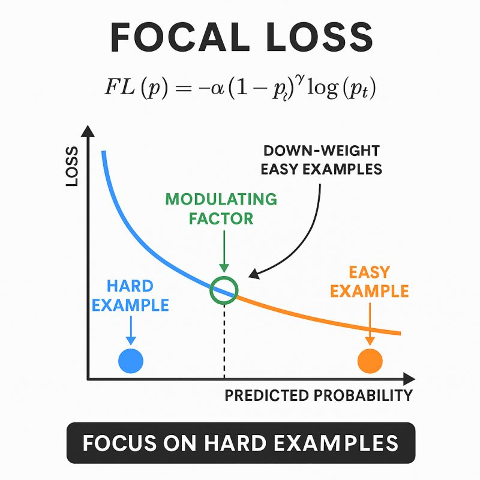
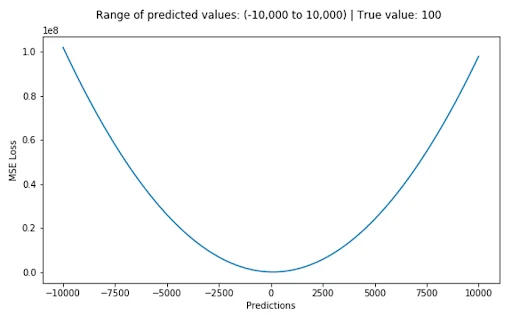
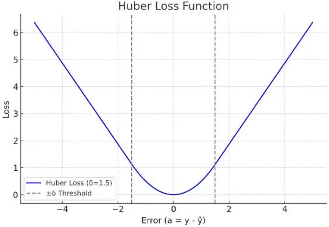
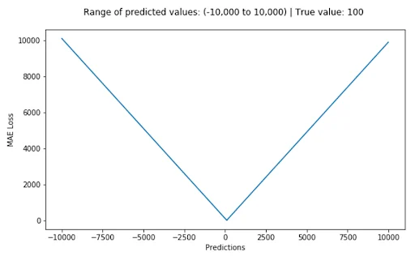

Các hàm Loss trong Machine Learning

Focal Loss
Hàm loss cho bài toán mất cân bằng dữ liệu.

Mean Squared Error (MSE)
Hàm loss cơ bản cho bài toán hồi quy.

Huber Loss
Kết hợp ưu điểm của MSE và MAE.

Mean Absolute Error (MAE)
Bền vững hơn với outlier trong dữ liệu.
Database và Vector Search

SQL Database
Kiến thức nền về hệ quản trị cơ sở dữ liệu quan hệ.
Vector Database
Khái niệm, cách hoạt động và ứng dụng trong AI.
Distance Metrics
Công thức L1, L2, Cosine và Dot Product cho embedding và vector search.